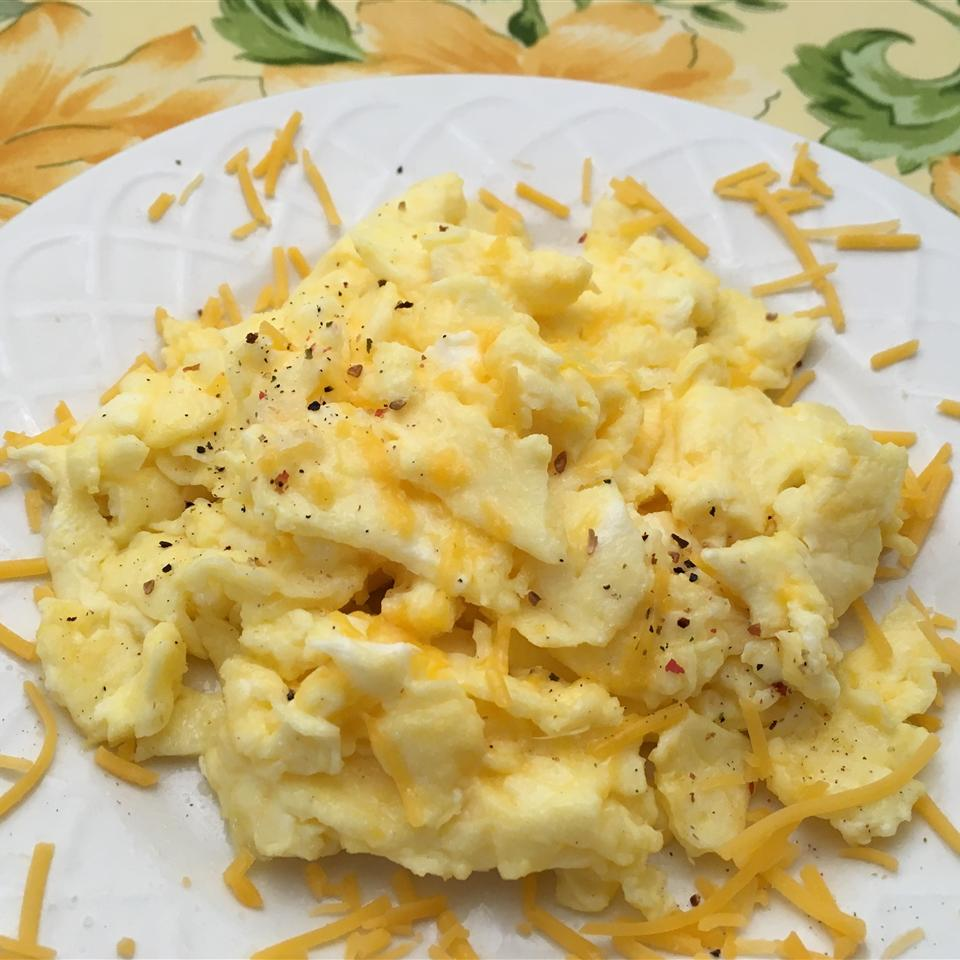

Scrambled Eggs

Super simple scrambled egg recipe. Delicious for breakfast, lunch, dinner or a snack!
Makes 1 Serving
Ingredients
- 2 eggs
- 2 tablespoons sliced cheddar cheese
- 2 thin slices of ham (optional)
- 1 teaspoon heavy cream
- 1/2 teaspoon butter
Instructions
- Whisk eggs together in a small bowl until smooth. Mix in Cheddar cheese, ham, and heavy cream.
- Melt butter in a skillet over medium heat. Pour in egg mixture; cook and stir until set but still moist, 3 to 5 minutes.
Homepage